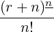
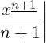
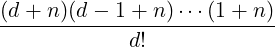

(x − n + 1) denotes a falling factorial, and
(x − n + 1) denotes a falling factorial, and
| Up | Next | Prev | PrevTail | Tail |
This package is based on a port of the Maple random polynomial generator together with some support facilities for the generation of random numbers and anonymous procedures.
This package is based on a port of the Maple random polynomial generator together with some support facilities for the generation of random numbers and anonymous procedures.
The operator randpoly is based on a port of the Maple random polynomial generator. In fact, although by default it generates a univariate or multivariate polynomial, in its most general form it generates a sum of products of arbitrary integer powers of the variables multiplied by arbitrary coefficient expressions, in which the variable powers and coefficient expressions are the results of calling user-supplied functions (with no arguments). Moreover, the “variables” can be arbitrary expressions, which are composed with the underlying polynomial-like function.
The user interface, code structure and algorithms used are essentially identical to those in the Maple version. The package also provides an analogue of the Maple rand random-number-generator generator, primarily for use by randpoly. There are principally two reasons for translating these facilities rather than designing comparable facilites anew: (1) the Maple design seems satisfactory and has already been “proven” within Maple, so there is no good reason to repeat the design effort; (2) the main use for these facilities is in testing the performance of other algebraic code, and there is an advantage in having essentially the same test data generator implemented in both Maple and REDUCE. Moreover, it is interesting to see the extent to which a facility can be translated without change between two systems. (This aspect will be described elsewhere.)
Sections 20.44.2 and 20.44.3 describe respectively basic and more advanced use of randpoly; §20.44.4 describes subsidiary functions provided to support advanced use of randpoly; §20.44.5 gives examples; an appendix gives some details of the only non-trivial algorithm, that used to compute random sparse polynomials. Additional examples of the use of randpoly are given in the test and demonstration file randpoly.tst.
The operator randpoly requires at least one argument corresponding to the polynomial variable or variables, which must be either a single expression or a list of expressions.43 In effect, randpoly replaces each input expression by an internal variable and then substitutes the input expression for the internal variable in the generated polynomial (and by default expands the result as usual), although in fact if the input expression is a REDUCE kernel then it is used directly. The rest of this document uses the term “variable” to refer to a general input expression or the internal variable used to represent it, and all references to the polynomial structure, such as its degree, are with respect to these internal variables. The actual degree of a generated polynomial might be different from its degree in the internal variables.
By default, the polynomial generated has degree 5 and contains 6 terms. Therefore, if it is univariate it is dense whereas if it is multivariate it is sparse.
Other arguments can optionally be specified, in any order, after the first compulsory variable argument. All arguments receive full algebraic evaluation, subject to the current switch settings etc. The arguments are processed in the order given, so that if more than one argument relates to the same property then the last one specified takes effect. Optional arguments are either keywords or equations with keywords on the left.
In general, the polynomial is sparse by default, unless the keyword dense is specified as an optional argument. (The keyword sparse is also accepted, but is the default.) The default degree can be changed by specifying an optional argument of the form
In the multivariate case this is the total degree, i.e. the sum of the degrees with respect to the individual variables. The keywords deg and maxdeg can also be used in place of degree. More complicated monomial degree bounds can be constructed by using the coefficient function described below to return a monomial or polynomial coefficient expression. Moreover, randpoly respects internally the REDUCE “asymptotic” commands let, weight etc. described in §11.4 of the REDUCE manual, which can be used to exercise additional control over the polynomial generated.
In the sparse case (only), the default maximum number of terms generated can be changed by specifying an optional argument of the form
The actual number of terms generated will be the minimum of the value of terms and the number of terms in a dense polynomial of the specified degree, number of variables, etc.
The default order (or minimum or trailing degree) can be changed by specifying an optional argument of the form
The keyword is ord rather than order because order is a reserved command name in REDUCE. The keyword mindeg can also be used in place of ord. In the multivariate case this is the total degree, i.e. the sum of the degrees with respect to the individual variables. The order normally defaults to 0.
However, the input expressions to randpoly can also be equations, in which case the order defaults to 1 rather than 0. Input equations are converted to the difference of their two sides before being substituted into the generated polynomial. The purpose of this facility is to easily generate polynomials with a specified zero – for example
Order specification and equation input are extensions of the current Maple version of randpoly.
The operator randpoly accepts two further optional arguments in the form of equations with the keywords coeffs and expons on the left. The right sides of each of these equations must evaluate to objects that can be applied as functions of no variables. These functions should be normal algebraic procedures (or something equivalent); the coeffs procedure may return any algebraic expression, but the expons procedure must return an integer (otherwise randpoly reports an error). The values returned by the functions should normally be random, because it is the randomness of the coefficients and, in the sparse case, of the exponents that makes the constructed polynomial random.
A convenient special case is to use the function rand on the right of one or both of these equations; when called with a single argument rand returns an anonymous function of no variables that generates a random integer. The single argument of rand should normally be an integer range in the form a .. b, where a, b are integers such that a < b. The spaces around (or at least before) the infix operator “..” are necessary in some cases in REDUCE and generally recommended. For example, the expons argument might take the form
The first argument of rand must be either an integer range in the form a .. b, where a, b are integers such that a < b, or a positive integer n which is equivalent to the range 0 .. n − 1. The operator rand constructs a function of no arguments that calls the REDUCE random number generator function random to return a random integer in the range specified; in the case that the first argument of rand is a single positive integer n the function constructed just calls random(n), otherwise the call of random is scaled and shifted.
As an additional convenience, if rand is called with a second argument that is an identifier then the call of rand acts exactly like a procedure definition with the identifier as the procedure name. The procedure generated can then be called with an empty argument list by the algebraic processor.
[Note that rand() with no argument is an error in REDUCE and does not return directly a random number in a default range as it does in Maple – use instead the REDUCE function random (see below).]
The operator proc provides a generalization of rand, and is primarily intended to be used with expressions involving the random function (see below). Essentially, it provides a mechanism to prevent functions such as random being evaluated when the arguments to randpoly are evaluated, which is too early. The operator proc accepts a single argument which is converted into the body of an anonymous procedure, which is returned as the value of proc. (If a named procedure is required then the normal REDUCE procedure statement should be used instead.) Examples are given in the following sections, and in the file randpoly.tst.
As an additional convenience, this package extends the interface to the standard REDUCE random function so that it will directly accept either a natural number or an integer range as its argument, exactly as for the first argument of rand. Hence effectively
Rand is a special case of proc, and (for either) if the switch comp is on (and the compiler is available) then the generated procedure body is compiled.
Rand with a single argument and proc both return as their values anonymous procedures, which if they are not compiled are Lisp lambda expressions. However, if compilation is in effect then they return only an identifier that has no external significance44 but which can be applied as a function in the same way as a lambda expression.
It is primarily intended that such “proc expressions” will be used immediately as input to randpoly. The algebraic processor is not intended to handle lambda expressions. However, they can be output or assigned to variables in algebraic mode, although the output form looks a little strange and is probably best not displayed. But beware that lambda expressions cannot be evaluated by the algebraic processor (at least, not without declaring some internal Lisp functions to be algebraic operators). Therefore, for testing purposes or curious users, this package provides the operators showproc and evalproc respectively to display and evaluate “proc expressions” output by rand or proc (or in fact any lambda expression), in the case of showproc provided they are not compiled.
The file randpoly.tst gives a set of test and demonstration examples.
The following additional examples were taken from the Maple randpoly help file and converted to REDUCE syntax by replacing [ ] by { } and making the other changes shown explicitly:
The only part of this package that involves any mathematics that is not completely trivial is the procedure to generate a sparse set of monomials of specified maximum and minimum total degrees in a specified set of variables. This involves some combinatorics, and the Maple implementation calls some procedures from the Maple Combinatorial Functions Package combinat (of which I have implemented restricted versions in REDUCE).
Given the maximum possible number N of terms (in a dense polynomial), the required number of terms (in the sparse polynomial) is selected as a random subset of the natural numbers up to N, where each number indexes a term. In the univariate case these indices are used directly as monomial exponents, but in the multivariate case they are converted to monomial exponent vectors using a lexicographic ordering.
By explicitly enumerating cases with 1, 2, etc. variables, as indicated by the inductive proof below, one deduces that:
Proposition 1. In n variables, the number of distinct monomials having total degree precisely r is r+n−1Cn−1, and the maximum number of distinct monomials in a polynomial of maximum total degree d is d+nCn.
Proof Suppose the first part of the proposition is true, namely that there are at most
| Nh(n,r) = r+n−1C n−1 |
distinct monomials in an n-variable homogeneous polynomial of total degree r. Then there are at most
| N(d,r) = ∑ r=0dr+n−1C n−1 = d+nC n |
distinct monomials in an n-variable polynomial of maximum total degree d.
The sum follows from the fact that
|
r+nC
n =  |
where xn = x(x − 1)(x − 2)(x − n + 1) denotes a falling factorial, and
|
∑
a≤x<bxn =  ab. |
(See, for example [GK82, equation (1.37)]. Hence the second part of the proposition follows from the first.
The proposition holds for 1 variable (n = 1), because there is clearly 1 distinct monomial of each degree precisely r and hence at most d + 1 distinct monomials in a polynomial of maximum degree d.
Suppose that the proposition holds for n variables, which are represented by the vector X. Then a homogeneous polynomial of degree r in the n + 1 variables X together with the single variable x has the form
xrP
0(X) + xr−1P
1(X) +  + x0P
r(X) + x0P
r(X)
|
where Ps(X) represents a polynomial of maximum total degree s in the n variables X, which therefore contains at most s+nCn distinct monomials. The homogeneous polynomial of degree r in n + 1 terms therefore contains at most
| ∑ s=0rs+nC n = r+n+1C n+1 |
distinct monomials. Hence the proposition holds for n + 1 variables, and therefore by induction it holds for all n. □
The previous proposition is also the basis of the algorithm to map term indices m ∈ ℕ to exponent vectors v ∈ ℕn, where n is the number of variables.
Define a norm ∥⋅∥ on exponent vectors by ∥v∥ = ∑ i=1nvi, which corresponds to the total degree of the monomial. Then, from the previous proposition, the number of exponent vectors of length n with norm ∥v∥≤ d is N(n,d) = d+nCn. The elements of the mth exponent vector are constructed recursively by applying the algorithm to successive tail vectors, so let a subscript denote the length of the vector to which a symbol refers.
The aim is to compute the vector of length n with index m = mn. If this vector has norm dn then the index and norm must satisfy
| N(n,dn − 1) ≤ mn < N(n,dn), |
which can be used (as explained below) to compute dn given n and mn. Since there are N(n,dn − 1) vectors with norm less than dn, the index of the (n− 1)-element tail vector must be given by mn−1 = mn − N(n,dn − 1), which can be used recursively to compute the norm dn−1 of the tail vector. From this, the first element of the exponent vector is given by v1 = dn − dn−1.
The algorithm therefore has a natural recursive structure that computes the norm of each tail subvector as the recursion stack is built up, but can only compute the first term of each tail subvector as the recursion stack is unwound. Hence, it constructs the exponent vector from right to left, whilst being applied to the elements from left to right. The recursion is terminated by the observation that v1 = d1 = m1 for an exponent vector of length n = 1.
The main sub-procedure, given the required length n and index mn of an exponent vector, must return its norm dn and the index of its tail subvector of length n− 1. Within this procedure, N(n,d) can be efficiently computed for values of d increasing from 0, for which N(n,0) = nCn = 1, until N(n,d) > m by using the observation that
|
N(n,d) = d+nC
n =  . |
| Up | Next | Prev | PrevTail | Front |